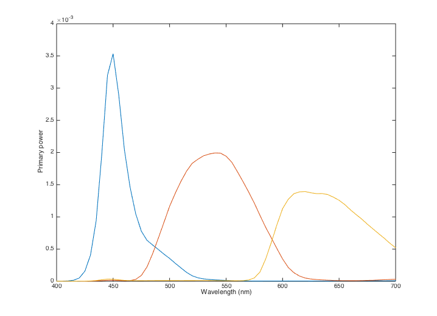
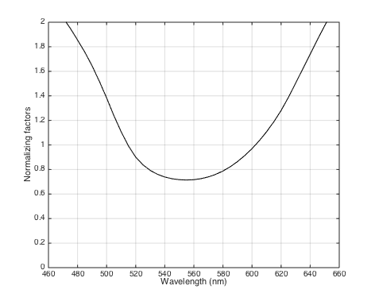
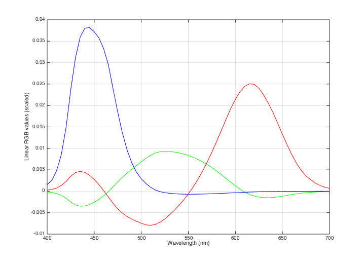
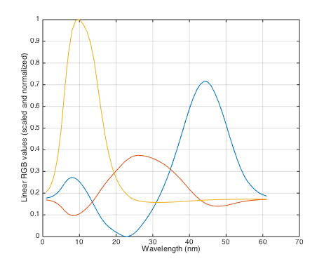
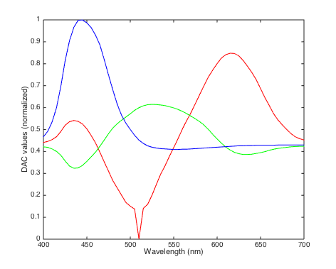
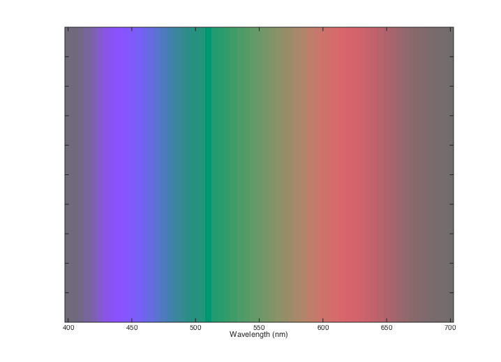

t_colorSpectrum
Apply color methods to render an approximation to the visible spectrum
PURPOSE: This tutorial uses the color-matching tools we have developed to create an image approaching the appearance the rainbow (the spectral colors) on your display.
Class: Psych 221 - Applied Vision and Image Systems Tutorial: Color Spectrum Author: Wandell Purpose: An example calculation: making a desaturated rainbow Last Update: 01.05.15 (HJ) Duration: 20 minutes
12/29/14 dhb Updated for isetbio, and cleaned a bit.
Contents
Initialize
ieInit;
Get display primaries
Let's suppose that we know the spectral power distributions of your monitor's primaries. For this example, we will use the SPDs for a sample display description provided with isetbio.
wave = (400:5:700)'; % wavelength samples dWave = wave(2) - wave(1); % bin size d = displayCreate('LCD-Apple', wave); wave = displayGet(d,'wave'); primaries = displayGet(d, 'spd primaries'); % Here is a plot of the primaries. vcNewGraphWin; plot(wave,primaries(:,3:-1:1)); xlabel('Wavelength (nm)'); ylabel('Primary power');
Warning: Should set wave as name-value pairs Changing wave and interpolating SPD, for consistency
Get color matching functions
We use the CIE XYZ color matching functions for creating calibrated signals. We load them first. The ieReadSpectra function splines these to match the passed wavelength sampling.
XYZ = ieReadSpectra('XYZ', wave);
Compute color transfomration matrix
We compute the matrix that converts between XYZ values linear intensities of the monitor RGB values. We do this in two steps. First, we find the XYZ values for each of the individual primaries. The columns of this matrix represent the XYZ values of the red, green and blue primaries, respectively. These values should be relatively easy to interpret.
rgb2xyz = 683 * dWave * XYZ' * primaries; %#ok % Alternatively, rgb2xyz = displayGet(d, 'rgb2xyz')'; % Invert the rgb2xyz matrix so that we can compute from XYZ back to linear % RGB values. % % Notice that the values of the xyz2rgb matrix contain negative values and % are difficult to interpret directly. Such is life. xyz2rgb = inv(rgb2xyz);
Get RGB values for the spectrum locus
In principle, we could compute the RGB values of spectral lights now. Remember that the XYZ values of each spectral light are contained in the rows of the XYZ matrix. So, we need only to multiply the two matrices as in:
rgbSpectrum = xyz2rgb * XYZ'; %#ok % This calculation would produce the rgbSpectrum for monochrome lights of % equal energy. But, equal energy monochrome lights do not appear equally % bright. The brightest part of the spectrum is near 550nm, and the blue % and red ends are much dimmer (per unit watt). % % So, there is one adjustment I would like to make to the spectral colors. % I would like to display spectral colors that are similar in their % brightness. To adjust the overall luminance of the spectral values, I % will scale the XYZ values of each spectral light by a function that is % inversely related to its Y value. Remember that the Y value represents % luminance is roughly correlated with brightness. So, if we scale by the % Y value, we can compensate a bit for brightness differences. % % Here is what I propose to use as a scale factor. Adding the 0.4 % stabilizes the scale factor for small values of Y. Yvalues = XYZ(:,2); scaleFactors = 1 ./ (Yvalues + 0.4); % Now, let's scale the rgb values. Pay attention to the fact that I am % doing this scaling in the linear RGB space. This calculation would be % wrong if I did it on the frame buffer values, rather than the linear RGB % intensities. rgbSpectrum = rgbSpectrum*diag(scaleFactors); rgbSpectrum = rgbSpectrum'; % Here is a plot of the scale factors used to make the brightness of the % wavelengths more nearly equal. vcNewGraphWin; plot(wave,scaleFactors,'k') set(gca,'ylim',[0 2]), grid on xlabel('Wavelength (nm)'); ylabel('Normalizing factors'); % And here is a graph of the R,G and B values we need for each of the % individual wavelengths when they are presented at approximately equal % brightness. The horizontal axis shows wavelength and the three colored % curves show the linear intensity values needed for the primaries. vcNewGraphWin; plot(wave,rgbSpectrum(:,1),'r', ... wave,rgbSpectrum(:,2),'g', ... wave,rgbSpectrum(:,3),'b') grid on xlabel('Wavelength (nm)'); ylabel('Linear RGB values (scaled)'); 
Those pesky negative values
% As you can see in the figure, some of the RGB values are negative. These % are called "out of gamut" and cannot be displayed precisely. There is no % getting around this problem either for this example or in many real world % applications. Some physical colors in the world simply cannot be % displayed on conventional monitors, with three primaries. This % corresponds to the observation that in the color-matching experiment % sometimes we must move one of the primaries to the other side of the % field. % % There are many different suggestions (hacks) that people use to overcome % the physical limitation of displays. For our purposes, we can use a % fairly simple compromise -- some of you may like it, others may not. That % is the nature of this business. % % We can display these rgb values superimposed on a constant gray % background. By superimposing the spectrum on a constant background, we % can both add and subtract RGB values. % % We will use a gray background that is only as bright as the % most negative rgbSpectrum value. grayLevel = abs(min(rgbSpectrum(:))); rgbSpectrum = (rgbSpectrum + grayLevel); % And, we will scale the RGB values in rgbSpectrum so they are as large as % possible, but the sum of the background and these values will still be % less than the maximum display value (1). rgbSpectrum = rgbSpectrum/max(rgbSpectrum(:)); % Here is a plot of the RGB values scaled to be in range vcNewGraphWin; plot(rgbSpectrum); grid on xlabel('Wavelength (nm)'); ylabel('Linear RGB values (scaled and normalized)');
Display the RGB values
% Now, we correct for the display nonlinearities by presuming that we know % something (which we don't) about your display. Here is the display gamma % function relating a standard monitor frame buffer entries to the display % intensities. % % Here is the function we use to convert the linear values in rgb to the % frame buffer (DAC) values. The call to displayGet returns a table of the % non-linearity, and the function ieLUTInvert inverts it to provide the % inverse table, which is then used by ieLUTLinear to get the desired DAC % values. % % ieLUTLinear assumes a bit depth derived from the length of the table it % is passed, and this length in turn may be set by passing a bit depth % argument to ieLUTInvert. We normalize the DAC values to lie between 0 and % 1, because that is what the image show routines in Matlab want. bitDepth = 10; gammaTable = displayGet(d,'gamma table'); invGammaTable = ieLUTInvert(gammaTable,2^bitDepth); DAC = ieLUTLinear(rgbSpectrum, invGammaTable); normalizedDAC = DAC/(2^bitDepth); % Here is a plot of the DAC values we ended up with. vcNewGraphWin; plot(wave, normalizedDAC(:,1),'-r',... wave, normalizedDAC(:,2),'-g',... wave, normalizedDAC(:,3),'-b'); xlabel('Wavelength (nm)'); ylabel('DAC values (normalized)');
Create image for display, and show it
We create a horizontal linear ramp as the image. Each x-value corresponds to a single wavelength. We then use the lookup table created for each of the wavelength values (computed normalized DAC) to show the appearance of the spectrum.
im = 1:size(DAC,1); % One for each wave/DAC value mp = normalizedDAC; % The DAC values for each wavelength vcNewGraphWin; image(wave,1,im); colormap(mp); xlabel('Wavelength (nm)'); set(gca,'ytickLabel',''); % Notice that the overall saturation is limited by one part of the % spectrum. Perhaps if we didn't try to reproduce just that part of the % image, or we adjusted just that part, we could obtain a more saturated % overall appearance. Again, a design decision. % END TUTORIAL